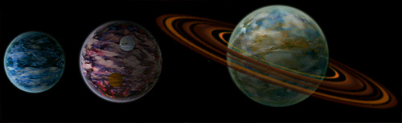
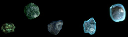
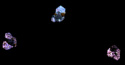
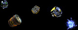

Handbook >
Space objects
|
Handbook >
Space objects
|
| Space objects The following objects located in the player can interact with: • Stars • Planets • Space stations • Spaceships • Black holes • Asteroids • Minerals • Cargoes Hover the cursor over any of these object to see a pop-up window with the information on this object. Stars  The center of any star system is always a star. Ships would normally try to evade the stars in a safe trajectory, since a close contact can seriously damage the ship's hull cover. Planets are orbiting around a star. If you hover over the mouse cursor over a star you can see a full list of planets and space stations in the relevant star system. Planets  Planets are space objects, which you can land on. Planets can be inhabited and uninhabited. You can find out the planet type, if you hover over its image with a mouse. On uninhabited planets you can use probes to search for various cargoes, equipment and items, which dropped off the destroyed ships. On inhabited planets you can trade, buy equipment and weapons, refuel, repair the ship's equipment, visit an Information center or the Government building. Each planet has its own small trade fleet, which protects it from dominators and pirates. The planets constantly witness occasional events like change of government or draught, which can result in economic cataclysms. It gives the pilots an opportunity to earn their living by transporting relevant cargoes. The source of news happening at nearest planets is the Information center. In addition to that most planets would be involved in certain scientific research and manufacture of new types of equipment. At the start of the game the economic potential of the planets is modest, and the items offered in their stores are not that cool. The planets gradually develop one technology after another, and the stores change their assortment to a more up-to-date equipment. The speed of the scientific progress depends on the inhabiting race, political system, amount of population and economy factors. The quickest ones in this are large, technologically developed gaalian planets with the democratic political system. Thus the equipment of the gaalian equipment is the most expensive. Black holes  The objects called 'black holes' develop unpredictably and die in the same way after some time. They represent a bilateral passage (tunnel) between two star systems. The ship's flight through such a hole happens without any fuel expenses, therefore it is the quickest and the most inexpensive means of travel. In addition there is another side of it. The dark holes give shelter to a powerful dominator Keller, as well as sjips of unknown races, which you will have to confront with in the mode of arcade battle. The birth and death of black holes are announced in the planetary news. Sometimes it is unknown where a black hole lead to. Asteroids  According to the law of gravitation asteroids move in the field of attraction of other astronomic bodies. They move with high speed and represent a serious danger to the spaceships. Having bumped into a spaceship, they can severely damage it. Thus the ship captains often shoot the asteroids from their guns. Minerals  Each asteroid holds mineral reserves within. If you shoot down an asteroid accurately, the reserves drop almost undamaged into the open in form of minerals, you will be able to pick them up. You can sell the picked up minerals in any trading center on any planet.Cargoes  In the space you can also find container with equipment, weapons or goods, which had dropped from other spaceships. You can pick up these containers with the help of your gripper. |